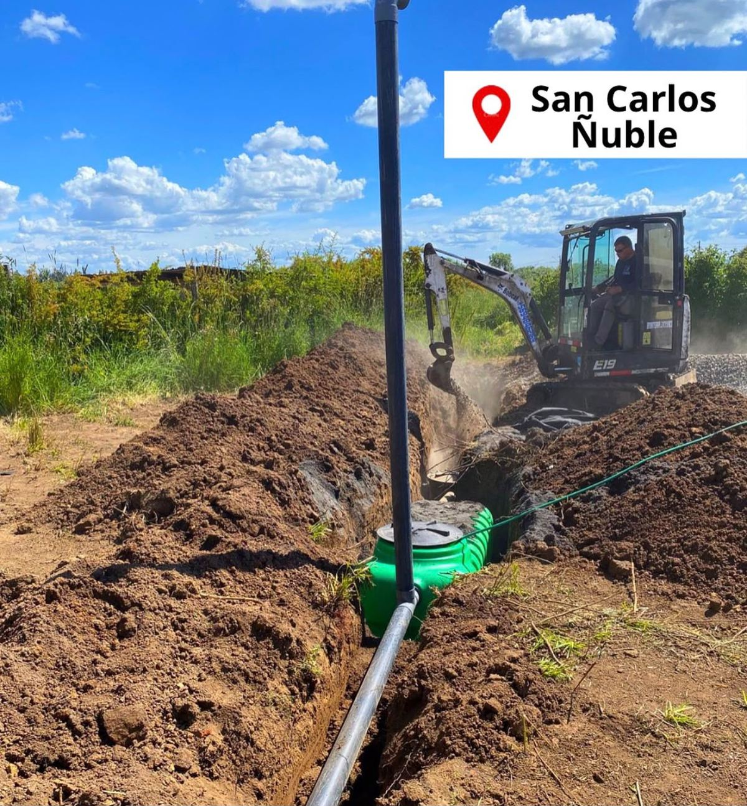
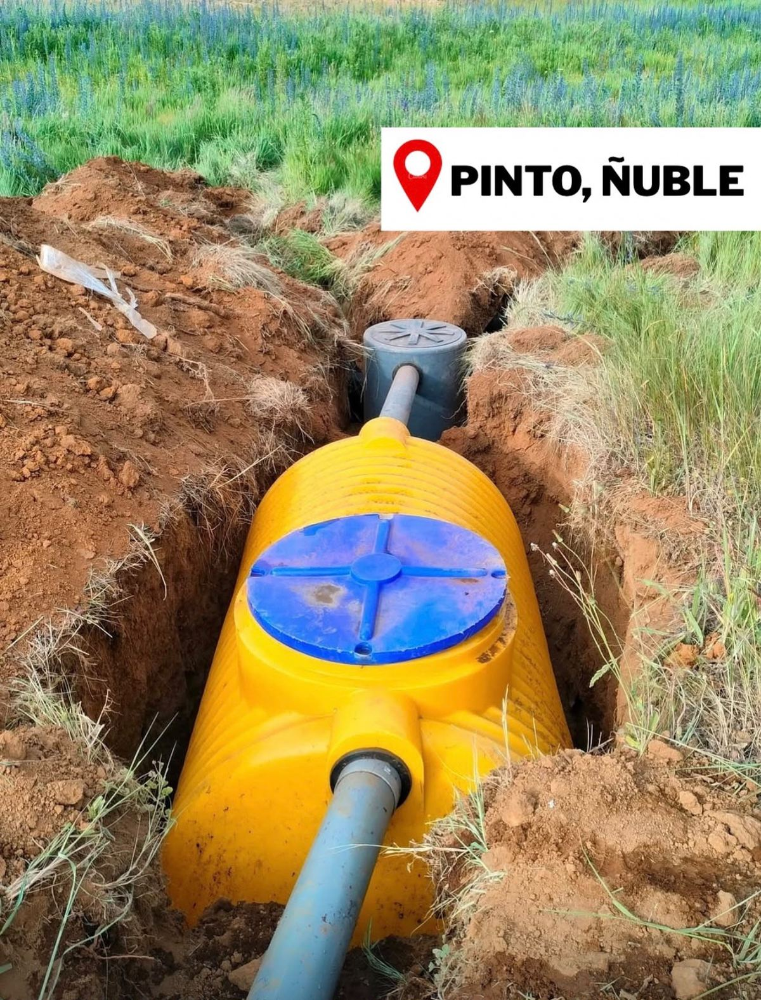

Evaluación y nivelación
Revisamos el terreno y hacemos la nivelación topográfica para definir pendientes y ubicación del sistema.
Evaluamos tu terreno, excavamos, ponemos los materiales e instalamos el sistema completo. Un solo equipo, una sola cotización y un informe PDF al terminar.


Cada etapa de la obra está a cargo del mismo equipo, desde la primera visita al terreno hasta la entrega del trabajo terminado.
Revisamos el terreno y hacemos la nivelación topográfica para definir pendientes y ubicación del sistema.
Movimiento de tierra con retroexcavadora propia del servicio y áridos incluidos para la obra.
Montaje de la fosa séptica con su kit, cámaras, ventilación y conexiones de tubería.
Drenes sobre cama de áridos, adaptados a la superficie y a las condiciones de cada terreno.
Al terminar enviamos un PDF con los detalles de la instalación realizada, para tu respaldo.
Materiales, maquinaria y mano de obra en una sola cotización. Tú no tienes que coordinar proveedores.
Un sistema séptico bien instalado trabaja en silencio por años. Estas son las piezas que instalamos en cada proyecto.
Esquema referencial. El diseño final depende del terreno, el número de usuarios y la normativa aplicable.
Envíanos tu comuna, ubicación y lo que sabes de tu terreno.
Revisamos el alcance y confirmamos materiales, plazos y presupuesto.
Llegamos con maquinaria y materiales: excavación, montaje, drenes y conexiones.
Recibes un informe PDF con los detalles del trabajo realizado.
Instalaciones hechas por nuestro equipo en distintas comunas de Ñuble y Maule. Toca una foto para verla completa.
Estas son algunas de las comunas donde ya hemos instalado. Si tu terreno está en otro sector, consúltanos igual.
Trabajamos en sectores rurales, parcelas y loteos de ambas regiones. Envíanos tu ubicación y te confirmamos factibilidad y disponibilidad.
Consultar mi sectorCompleta el formulario con lo que sabes de tu terreno. Preparamos tu solicitud para enviarla directo a nuestro WhatsApp.
Fosa séptica, kit de instalación, drenes, tubería completa, retroexcavadora, áridos, nivelación topográfica e instalación, más un informe PDF al terminar. La cotización define el alcance exacto según tu terreno.
En la mayoría de los casos sí. El plazo depende del acceso para la maquinaria, el tipo de suelo, el clima y la complejidad del proyecto, y lo confirmamos al cotizar.
Un informe PDF con los detalles de la instalación realizada. Es un respaldo técnico del trabajo y no reemplaza autorizaciones o certificados emitidos por la autoridad sanitaria.
Sí, gran parte de nuestras obras son en parcelas y sectores rurales de Ñuble y Maule. Indícanos tu comuna y ubicación para confirmar cobertura.
No. La fecha es una preferencia hasta que nuestro equipo confirme disponibilidad, alcance y condiciones del trabajo.